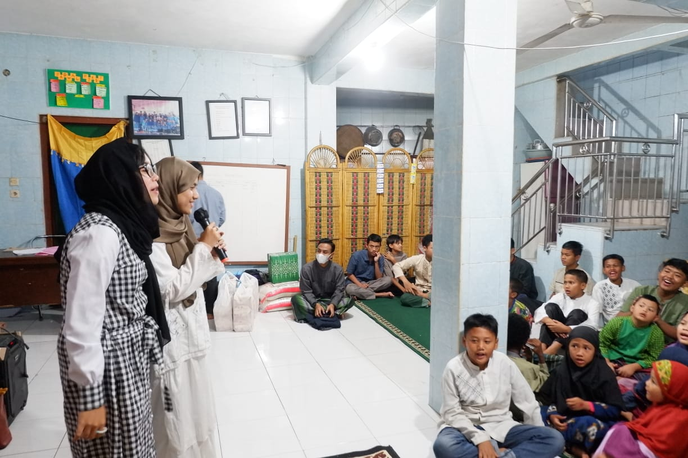
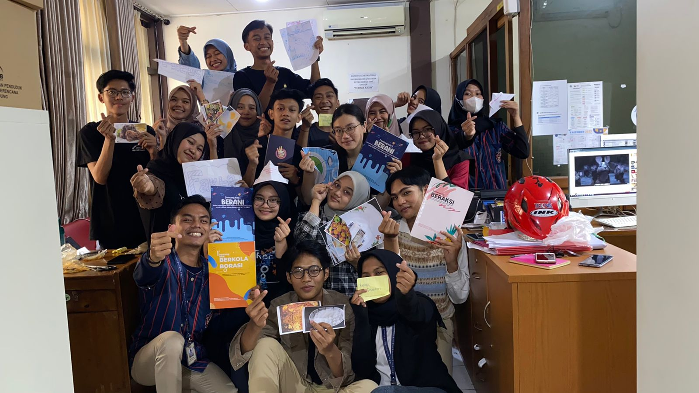

HELLO FELLAS, THIS IS GenRe!
GenRe (Generasi Berencana) merupakan salah satu program Badan Kependudukan dan Keluarga Berencana Nasional (BKKBN) untuk mewujudkan pembangunan yang berwawasan kependudukan dan mewujudkan keluarga kecil bahagia sejahtera.
Remaja sejatinya adalah harapan semua bangsa, negara-negara yang memiliki remaja yang kuat serta memiliki kecerdasan sprititual, intelektual serta emosional yang kuat menjadikan bangsa tersebut kelak akan kuat pula.
Masalah remaja yang timbul biasanya berkaitan dengan masalah seksualitas, AIDS, penyalahgunaan NAPZA, dan sebagainya. Remaja dalam kondisi ini tentu saja membutuhkan penanganan serta informasi
seluas-luasnya mengenai kesehatan reproduksi, pentingnya menata masa depan dengan baik lewat meninggalkan perilaku yang tidak bermanfaat dan merusak masa depan remaja itu sendiri.
Menjalani kehidupan remaja yang jauh dari perilaku seks bebas, pernikahan dini dan ketergantungan pada obat-obatan terlarang serta menjauhkan diri dari bahaya AIDS tentulah membutuhkan perhatian kita semua. Remaja tidak bisa
berjalan sendirian tanpa pendampingan orang tua, masyarakat lingkungan serta negaranya. Pendekatan BKKBN dengan melibatkan pihak sekolah dan kampus sebagai bagian dari mendekatkan GenRe dengan komunitasnya yaitu remaja sekolah/mahasiswa
yang telah berjalan selama ini tentulah harus mendapatkan dukungan dari semua pihak baik itu dari guru dan kampus dimana remaja dan mahasiswa itu beraktivitas. Melibatkan anak sebaya sebagai Duta GenRe yang telah berjalan selama
ini juga dengan pembekalan-pembekalan serta modul-modul yang sesuai dengan usianya diharapkan mampu mendekatkan program ini pada sasarannya yaitu remaja Indonesia. Langkah BKKBN mempersembahkan program Generasi Berencana (GenRe) sangat
diharapkan menjadikan kualitas remaja Indonesia mampu menjadi remaja yang mampu menggantikan generasi berikutnya, sehingga Indonesia kelak semakin maju serta diperhitungkan di mata dunia. Generasi yang dipersiapkan dengan terencana
memerlukan uluran dan kerjasama dari semua pihak, agar persoalan remaja serta kendalanya dapat diselesaikan secara bersama-sama.
Karena generasi berencana, bukan tidak mustahil akan melahirkan generasi emas bagi Indonesia.
Tujuan dan Sasaran GenRe
Program GenRe bertujuan untuk memfasilitasi remaja agar berperilaku hidup sehat dan berakhlak untuk mencapai ketahanan remaja sebagai dasar untuk mewujudkan Generasi Berencana. GenRe Kota Bandung ditujukan untuk para remaja yang belum menikah.
ABOUT ME

| Name | : | Salsabila
| | NIM | : | 10123214
| | Kelas | : | IF-6
|
Get in touch with me!

Pemilihan Duta GenRe Kota Bandung 2023
Our Journey!
Panitia PILDUGEN'23 | Technical Meeting Peserta |  Technical Meeting (2)
| Tes Tulis dan Wawancara | Technical Meeting Finalis 20 Besar | Pemaparan Program Inovasi
| Karantina | Karantina (2) | Panitia PILDUGEN'23
| Sambutan Plh Walikota Bandung | Audiens Grand Final | Finalis Grand Final
|
Get Know More About PILDUGEN
PILDUGEN atau Pemilihan Duta Generasi Berencana (GenRe) Kota Bandung selalu diadakan setiap tahunnya. Duta GenRe menjadi ajang pemilihan remaja putra dan putri untuk menjadi figur teladan serta motivator di kalangan remaja yang nantinya akan berperan memberikan wawasan kepada generasi muda emas tentang peduli remaja dan program GenRe lainnya. Selain itu juga untuk menciptakan remaja yang bebas narkoba dan HIV/AIDS.
Kegiatan ini adalah untuk mempersiapkan remaja atau young generation yang memiliki skill membantu pembangunan dan menjadi icon remaja yang baik serta bisa mengajak yang lain untuk menjauhi hal-hal yang bisa merusak masa depan.
Pendidik Sebaya dan Konselor Sebaya
Apa Itu PSKS?
Peran Pendidik Sebaya dan Konselor Sebaya diantaranya adalah menyampaikan informasi substansi program KRR dengan cara sosialisasi, penyuluhan dan diskusi kelompok dengan tema KRR, melaksanakan advokasi dan KIE tentang program kepada khalayak umum dan penentu kebijakan pemerintah kota serta melakukan kegiatan menarik minat remaja untuk menggunakan PIK Remaja sebagai wadah khusus remaja. Kedua, strategi Pendidik Sebaya dan Konselor Sebaya menghadapi tantangan dan keterbatasan meliputi faktor internal yaitu membekali diri dengan pengetahuan yang memadai, managemen pengelolaan PIK-Remaja, memaksimalkan sarana dan prasaran yang dimiliki, dan faktor internal adalah menggugah partisipasi remaja baik sebagai relawan atau pengguna layanan PIK melalui kegiatan inovatif, serta kemitraan dengan organisasi lain. Kesimpulannya, langkah dan strategi yang dilakukan oleh Pendidik Sebaya dan Konselor Sebaya ditengah permasalahan yang ada mampu mencapai efektivitas sebagai penyedia informasi KRR bagi teman sebaya.
Pendidik Sebaya (PS)
Pendidik Sebaya (PS) adalah remaja/mahasiswa yang secara fungsional mempunyai komitmen dan motivasi yang tinggi, sebagai narasumber bagi kelompok remaja/mahasiswa lainnya, telah mengikuti pelatihan/orientasi Pendidik Sebaya atau yang belum dilatih dengan mempergunakan Paduan Kurikulum dan Modul Pelatihan yang telah disusun oleh BKKBN, serta bertanggungjawab kepada ketua PIK-R/M.
Konselor Sebaya (KS)
Konselor Sebaya (KS) adalah Pendidikan Sebaya yang secara fungsional mempunyai komitmen dan motivasi yang tinggi untuk memberikan konseling bagi kelompok remaja/mahasiswa sebayanya, telah mengikuti orientasi/pelatihan konseling atau yang belum dilatih dengan menggunakan Panduan kurikulum dan Modul Pelatihan yang telah disusun oleh BKKBN.
GenRe! Action
On Recap
| |
| | |
| | |
We Care We Share
|  | 
| | |
|  | |
| | |
| | |
|
Apa Itu We Care We Share?
Tujuan dari rangkaian kegiatan yaitu dalam rangka aksi kepedulian terhadap anak-anak panti asuhan sekaligus edukasi yang berhubungan dengan program Genre. Sasaran kegiatan ini yaitu Panti Asuhan yang terdapat di Kota Bandung. Kegiatan ini dilakukan 6 bulan sekali setiap tahunnya.
International Youth Day
Tepat 24 tahun lalu, Majelis Umum Perserikatan Bangsa-Bangsa mengesahkan tanggal 12 Agustus sebagai Hari Remaja Internasional atau ‘International Youth Day’. Meskipun tidak banyak yang tahu tentang hari istimewa ini, termasuk di kalangan remaja sendiri. Pengesahan tersebut menunjukkan pengakuan para pemimpin dunia atas keberadaan dan peran penting remaja, tidak sekadar dalam pembangunan, tetapi juga keberlanjutan generasi dan bumi yang kita tinggali.
Pertama, remaja merupakan calon penduduk usia produktif sehingga harus dipersiapkan menjadi sumber daya manusia yang berkualitas agar dapat berperan sebagai aktor/pelaku utama pembangunan. Ini berarti remaja harus sehat fisik dan mental, memiliki pengetahuan dan keterampilan sesuai dengan perkembangan ilmu pengetahuan dan teknologi, dan memiliki karakter berpondasikan agama dan budaya.
Kedua, remaja merupakan calon pasangan dan calon orang tua sehingga harus disiapkan agar dapat membangun keluarga yang berkualitas dan melahirkan generasi yang juga berkualitas.
Ketiga, remaja merupakan pewaris alam/lingkungan kepada anak-cucunya sehingga harus dapat menjamin keberlanjutan kehidupan generasi berikutnya, atau dengan kata lain harus dapat mewariskan alam/lingkungan yang masih layak untuk ditinggali oleh anak-cucunya.
Ini berarti remaja dituntut untuk memiliki green skills, yaitu pengetahuan, kemampuan, nilai, dan sikap yang diperlukan untuk hidup, berkembang, dan mendukung masyarakat yang berkelanjutan dan hemat sumber daya (PBB, 2023).
Meet The Team!


Our Programs
Life Skill
Life Skill (keterampilan hidup) adalah berbagai keterampilan atau kemampuan untuk dapat berperilaku positif dan beradaptasi dengan lingkungan memungkinkan seseorang mampu menghadapi berbagai tuntutan dan tantangan dalam hidupnya sehari hari secara efektif.
Soft Skill
Sebagai kemampuan kemampuan yang tidak dapat terlihat dan harus dimiliki atau diperlukan untuk mencapai kesuksesan. Contoh : kecerdasan emosi, komunikasi, kepemimpinan, berpikir kritis
Hard Skill
Merupakan kemampuan spesifik yang harus dimiliki untuk suatu pekerjaan tertentu. Contoh : design, teknologi computer, marketing
Perilaku Beresiko & Tindakan Berbahaya
Perilaku berisiko adalah bentuk perilaku yang dapat membahayakan kesehatan dan kesejahteraan dirinya sendiri maupun orang lain
Tindakan berbahaya merupaka suatu tindakan yang dilakukan seseorang sehingga dapat meningkatkan kemungkinan terjadinya suatu yang tidak di inginkan atau kecelakaan.
Perlakuan negatif pada remaja bermasalah dapat terjadi karena disebabkan pemahaman yang kurang tepat atau perilaku berisiko. Perilaku birisiko pada remaja yang disebabkan oleh gangguan penyesuaian diri muncul karena dipengaruhi oleh factor dari dalam diri (internal) maupun factor dari luar diri (eksternal).
PKBR
Program PKBR merupakan suatu program untuk memfasilitasi terwujudnya Generasi Berencana (GenRe) yaitu remaja yang berperilaku sehat, terhindar dari risiko Triad KRR (Pernikahan Usia Dini, Seks Bebas dan Napza), bercita-cita mewujudkan keluarga kecil bahagia sejahtera serta menjadi contoh, model, idola, dan sumber informasi bagi teman sebayanya.
Gizi dan Stunting
Stunting merupakan suatu keadaan kurang gizi (kurang nutrisi) dalam jangka waktu lama.
Faktor penyebab stunting dari kondisi kesehatan fisik dan psikis, status gizi,karakteristik rumah tangga dan finansialnya.
Faktor penting berasal dari Ibu nya itu sendiri, dilihat dari perilaku menjaga kesehatan dan gizi nya saat remaja.
Our Achievements
JUARA KATEGORI VIDEO EDUKASI TINGKAT PROVINSI JAWA BARAT 2022
JUARA 1 PIK REMAJA SEGMENTASI BERAKSI TINGKAT NASIONAL 2022 SMAN 25 BANDUNG
JUARA 1 PIK REMAJA SEGMENTASI BERKOLABORASI TINGKAT NASIONAL 2022 PIKMA UIN BANDUNG
JUARA 3 TPK BERAKSI “EDUKASI ELSIMIL” SEPEKAN AKSI TINGKAT NASIONAL 2022
JUARA 1 FORUM GENRE TERBAIK TINGKAT NASIONAL 2022 “PENGIMPLEMENTASIAN MODUL TENTANG KITA TERBANYAK TINGKAT PROVINSI JAWA BARAT”
JUARA 2 PIK REMAJA BERAKSI TINGKAT PROVINSI JAWA BARAT 2022 SMAN 22 BANDUNG
JUARA 3 DUTA GENRE PUTRA TINGKAT PROVINSI JAWA BARAT 2022 RIZKI RIFALDI SMAN 25 BANDUNG
JUARA 3 DUTA GENRE PUTRI TINGKAT PROVINSI JAWA BARAT 20222 ABIGAIL TABITHA KECAMATAN BABAKAN CIPARAY
FORUM GENRE TERBAIK TINGKAT PROVINSI JAWA BARAT 2022
Best Kostume Kategori 'AKU KAMU' BKKBN 2023
Capaian edukasi gizi dan anemia INI GENTING 12k Forum GenRe 2023
PIKR BERANI PERCONTOHAN JAWA BARAT JUARA 3 2023
PIKR BERAKSI PERCONTOHAN JAWA BARAT JUARA 3 2023
ADUJAK FORUM GENRE JAWA BARAT 2023 "KELOMPOK TERPINTAR"
TERBAIK 2 DUTA GENRE PUTRA JAWA BARAT 2023
HARAPAN 1 DUTA GENRE PUTRI JAWA BARAT 2023
| |